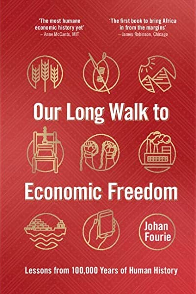

a cross-hatched pattern drawn with an ochre crayon on a ground silcrete flake was found, implying that the humans who inhabited Africa before the migration from the continent had all the features of human cognition and behaviour that we associate with humans today.
a cross-hatched pattern drawn with an ochre crayon on a ground silcrete flake was found, implying that the humans who inhabited Africa before the migration from the continent had all the features of human cognition and behaviour that we associate with humans today.

Our Long Walk to Economic Freedom
Johan Fourie
01: Who Are the Architects of Wakanda? This eassay is a short introduction to the six schools of thought that characterized the field of African economics since the 1950s.
a cross-hatched pattern drawn with an ochre crayon on a ground silcrete flake was found, implying that the humans who inhabited Africa before the migration from the continent had all the features of human cognition and behaviour that we associate with humans today.
Early farming societies first appeared in the Fertile Crescent around 10,000 BCE, giving rise to towns and more collectivist norms than hunter-gatherers. More individualist people tend to move north and create new societies, from which more individualist people move north and create new societies, etc. This is why Northern Europe is more individualistic than Southern Europe.
Around 3000 BCE, the domestication of African yams allowed Bantu-speaking farmers located in present-day southern Nigeria or northern Cameroon to produce larger surpluses and increase their population size. This productivity advantage set off a migration in two directions. Somewhere along the way, they obtained ironworking, which allowed them to speed up their colonisation of southern Africa. The final outcome of this massive migration was that almost all of central, eastern and southern Africa became the home of Bantu speakers. The one place where Bantu speakers did not settle was the region with a Mediterranean climate at the southern tip of the continent, roughly today's Western Cape of South Africa. Here Khoesan people would continue to thrive until European settlers arrived in approximately 1500 CE... with something more nutrient-rich to eat, wheat.
Every society must answer these three questions: how to ensure that enough goods are produced, that enough of the right goods are produced, and that they are fairly distributed to everyone. This can be decided in three ways: through custom and tradition, such as in tribes; through command, as when there is royalty; or, if/when the market arises, the market decides. The story of Joseph tells us that Canaan and Egypt were predominantly agricultural societies ruled by autocrats.
The Romans, of course, were known for their prosperous cities, but most of them had one purpose: to benefit a small elite. That is why most farm workers were slaves, usually people captured through conquest, even in 'democratic' Greece. It was the historian William McNeill, in his 1976 book Plagues and Peoples, who suggested that one important factor contributing to the fall of the Roman Empire could be the Plague of Cyprian around 250 CE. Pandemics like these, he argues, left the empire with a population too small to support its large military and state bureaucracy.